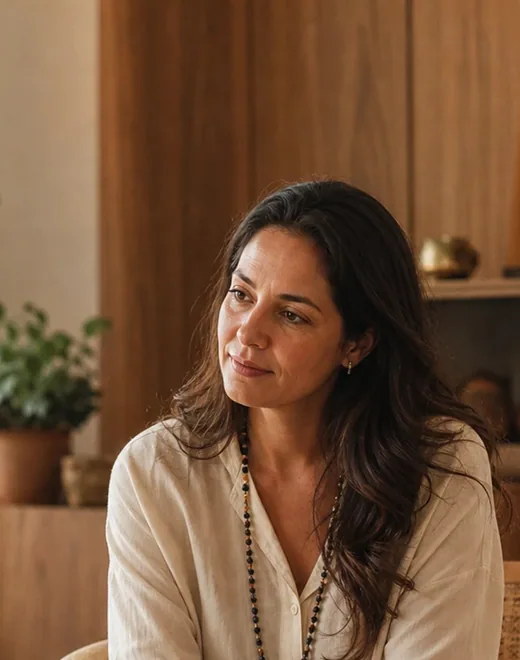
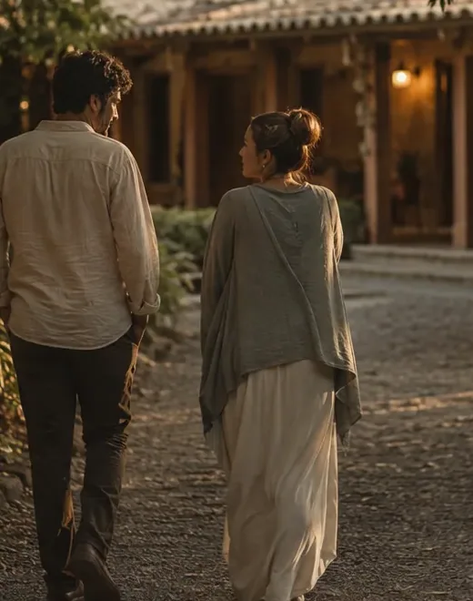
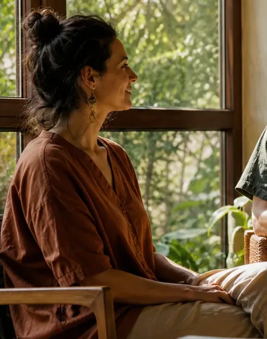
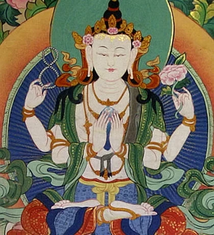
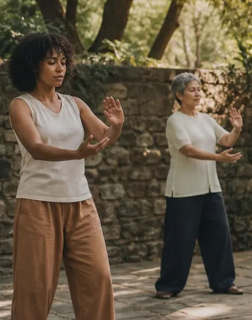
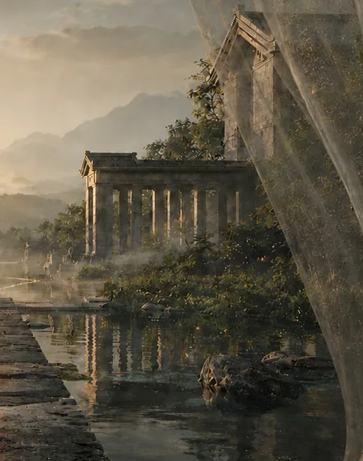
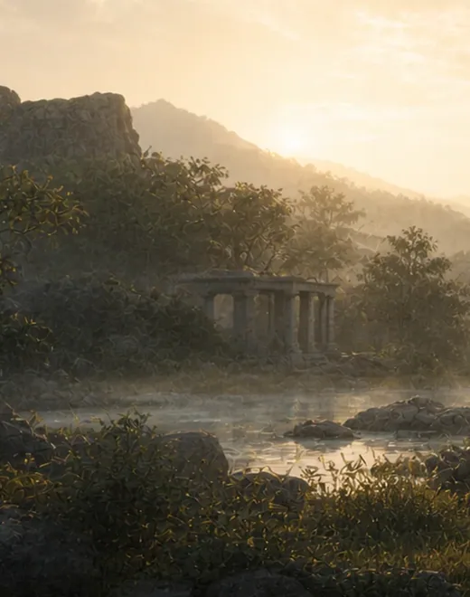
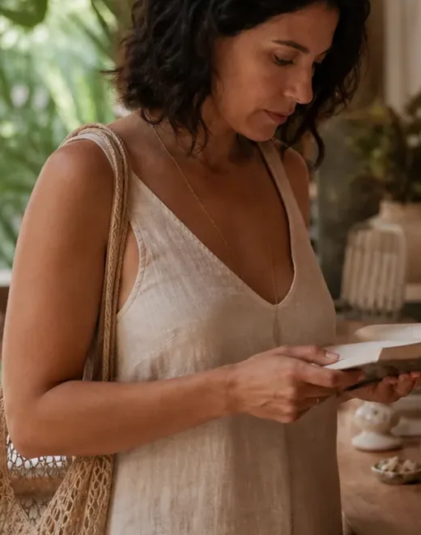

Bem-vindo
O Instituto Cultural Potala é um lugar de encontro entre cuidado, conhecimento e cultura.

Recepção · Instituto Potala
Não sabe o que procura?
A Recepção escuta sua pergunta, apresenta os caminhos do Instituto e ajuda você a reconhecer por onde começar, sem precisar escolher sozinho.


O lugar e seu propósito
Quem somos
Um lugar de encontro entre cuidado, conhecimento e cultura. Desde 2012, pessoas se reúnem no Potala para aprender, compartilhar experiências e cuidar de si e do outro.


Cuidado com contexto
Atendimentos
Cada pessoa chega com uma história diferente. Antes de indicar uma técnica, a casa escuta o momento, apresenta cada forma de cuidado com clareza e ajuda você a reconhecer por onde começar.


Corpo, mente e relações
Saúde integrativa
Sintomas, emoções, vínculos e hábitos podem fazer parte da mesma história. A Saúde Integrativa articula cuidado convencional e práticas complementares, sem prometer uma resposta única.


Pessoas antes de especialidades
Profissionais
O Potala reúne pessoas com formações, trajetórias e modos de escutar diferentes. Conhecer quem cuida também faz parte de escolher um caminho.


Conhecimento que se torna caminho
Cursos
Tradições de cuidado, arte, filosofia e práticas integrativas, com tempo para estudar, praticar e integrar. Há encontros breves para experimentar e formações para aprofundar.


Movimento é encontro
Atividades
Práticas para o corpo, a atenção e a convivência. Há quem chegue para se fortalecer, quem procure silêncio e quem encontre na turma um espaço de companhia.


O Potala está vivo
Programação
Aulas, atendimentos, cursos e encontros mudam com a vida da casa. A agenda reúne o que acontece agora e mostra um jeito simples de começar.

A arte também cuida
Arte e cultura
Cinema, música, livros e conversa abrem perguntas que nenhuma explicação abriria sozinha. Artistas, leitores e visitantes dividem o mesmo espaço.

Uma pausa no caminho
Inspiração
Nem toda visita precisa terminar em uma escolha. Respirar, meditar por um minuto, escutar os sons ou levar uma pergunta: práticas curtas, no seu tempo.


Caderno de Travessia
Blog
Reflexões, práticas e caminhos escritos por quem vive a casa: ideias para atravessar o cotidiano com mais presença.


O presente pede contexto
Revista
Acontecimentos que merecem atenção, aproximados da ciência, da filosofia e da experiência humana. Uma edição para ler o nosso tempo com calma.


Escolhas com contexto
Loja
Livros, óleos e objetos que continuam uma prática, um estudo ou uma orientação — nunca atalhos para o cuidado. Cada item aparece com o sentido de estar ali.

A jornada continua entre pessoas
Convivência
O Potala é também o que acontece quando pessoas se encontram, conversam e seguem caminhos diferentes no mesmo lugar. Você pode explorar com calma ou começar por uma conversa.